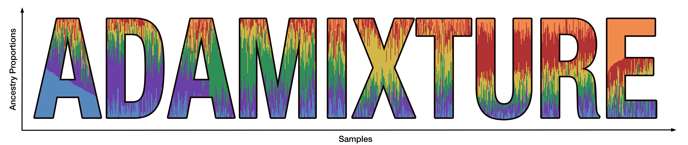

I am currently mastering biological fundamentals to apply AI principles to the "code of life".
My academic journey began at the Polytechnic University of Catalonia (UPC), where I pursued a Bachelor’s degree in Artificial Intelligence. This foundation was significantly broadened through two international exchange semesters: first at the Technical University of Denmark (DTU) (Fall 2024), and subsequently at Stanford University (Fall 2025).
Driven by a desire to bridge code and biology, I have actively sought research opportunities. At the Stanford Biomedical Data Science Department, I collaborated with Alex Ioannidis to accelerate genetic ancestry analysis using deep learning—initially remotely and later in person. In parallel, I worked at the Barcelona Supercomputing Center (BSC) under David Torrents, leveraging high-performance computing for large-scale genomic disease prediction, and explored computer vision at the Institute of Industrial and Control Engineering (IOC) under the supervision of Iziah Zaplana.
I am currently at the European Bioinformatics Institute (EMBL-EBI) in Cambridge. Under the supervision of Jess Ewald, I am focusing on integrating large language models with Cell Painting data to predict drug toxicity.

ADAMIXTURE is an unsupervised global ancestry inference method that scales the ADMIXTURE model to biobank-sized datasets. It combines the Expectation–Maximization (EM) framework with the ADAM first-order optimizer, enabling parameter updates after a single EM step.
Paper / CodeTemplate inspired by Elena Alegret